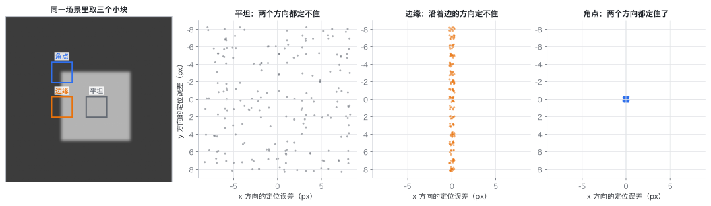
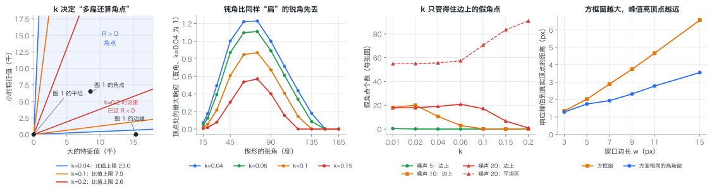
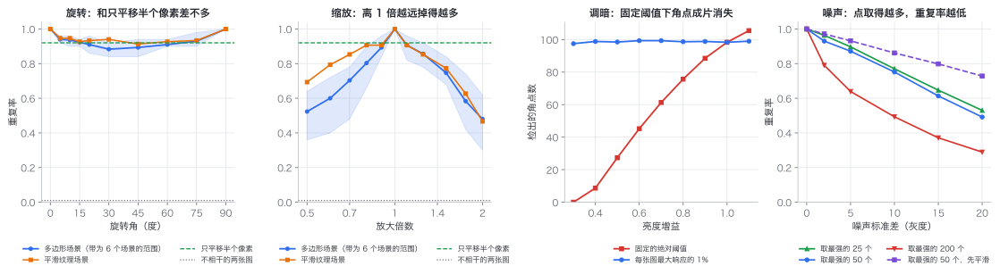
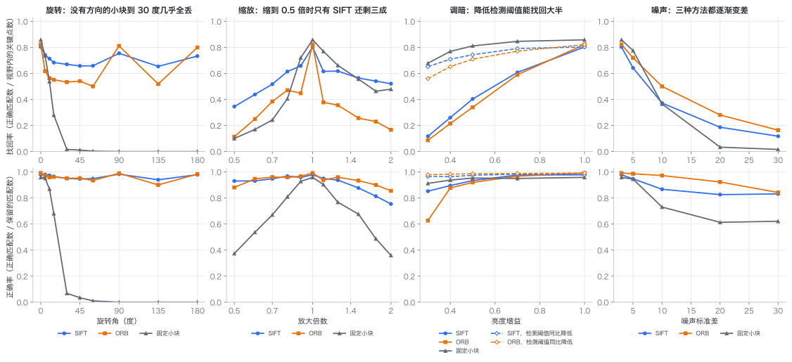
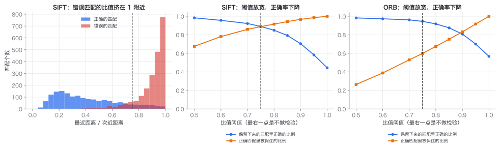
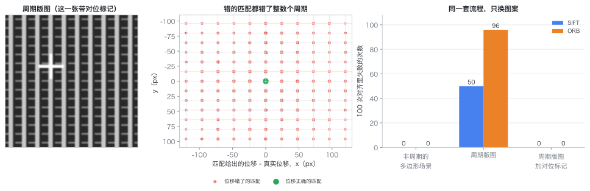

本章所有数字都来自合成图像上的实测，记录在 figures/实测数字.json，由 solutions 分支的 solutions/figures/ch05.py 生成。Harris 响应用本章作业的参考实现，SIFT、ORB、匹配和 RANSAC 用 OpenCV 5.0。耗时是在一台 Apple 芯片的 Mac 上测的，只能看量级和相对快慢。换成真实图像或别的机器，数值会变，结论的方向要自己再测一遍。
配套练习：
5-1_Harris响应.py是本章自动验收的作业。原讲义提到的“练习 5-1 手写 Harris”就是它；“练习 5-2 SIFT 匹配”的题目在视觉算法学习计划.md的“第 5 天”一节，需要自己新建文件完成。
0. 本章怎么学
应用场景：大位移或带旋转缩放的对齐，重复图案上要慎用。典型用法是两张图之间的位移、角度、倍率都不知道，先用特征点给出一个粗的变换，再交给第 16 章的方法精修。图像拼接、换倍率之后的定位、手持拍摄的照片对齐都属于这一类。
优先级：P1。前置是第 2 章（梯度、Sobel）和第 4 章（单应和 RANSAC）。后面第 6 章的光流用角点决定“跟踪谁”，第 7 章的位姿估计和第 16 章的对齐都把本章当作“提供对应点”的一步。
| 档位 | 累计用时 | 做什么 | 做到什么算完 |
|---|---|---|---|
| 速通 | 3 小时 | 读第 0 节和 5.1、5.2、5.5、5.8 节，看懂图 1、图 2、图 5、图 6，把第 5.9 节演示的五步都试一遍，答完 5 道小测 | 能讲清角点为什么好定位、k 在管什么、比值检验在过滤什么，以及特征点在周期图案上为什么会对错整数个周期 |
| 标准 | 10 小时 | 读完全章，跑 Notebook，完成作业并验收通过，做第 5.11 节前三个破坏实验，填实验记录 | 验收 PASS，实验记录里有一次旋转或阈值导致的失效，以及一条自己测的比值阈值曲线 |
| 深挖 | 12 小时 | 再做第 5.11 节后三个破坏实验和第 5.12 节的扩展 | 能在自己拍的一对照片上报告匹配正确率、内点比例和耗时，并写清条件 |
用时超过所选档位的 1.5 倍还没做完，就把卡点写进 学习进度.md，先往下一章走。SIFT 的五步只要求能按顺序讲出每一步在解决什么问题，不要求推导。
5.1 从“整张图”变成“少数可靠地标”
两张照片可能尺寸不同、亮度不同，还可能发生旋转和局部遮挡。如果逐像素比较，它们几乎处处不同；但窗户角、书本标题的笔画交点、建筑纹理等局部结构仍可能被重复找到。特征方法的目标，就是把百万像素压缩成几百到几千个可靠地标。
一套局部特征通常包含两部分：
- 关键点（keypoint）：回答“哪里值得看”，包含位置，有时还包含尺度、方向、响应强度。
- 描述子（descriptor）：回答“这个局部长什么样”，把关键点周围的纹理编码成向量或二进制串。
一个“好特征”至少具备：
- 可重复性：视角、尺度或亮度稍变后还能在相近物理位置检测到。
- 独特性：描述子不应与大量无关位置都很像。
- 局部性：只依赖邻域，局部遮挡不会毁掉全局匹配。
- 定位准确：点的位置要稳定，否则几何估计的重投影误差会变大。
- 数量与分布合适：不是越多越好；一千个挤在树叶上的点不如均匀覆盖画面的几百个点。
平坦区域不是好特征，因为向任何方向移动都看不出变化；直线边缘也不够好，因为沿边缘移动几乎不变，这叫孔径问题。角点在两个方向都变化，位置最容易被唯一确定。
实测：小块能不能在第二张图里找回来
上面这段话可以直接量。同一个场景拍两次，各加标准差 10 的噪声，从第一张图上取一个 15×15 的小块，在第二张图的 ±8 px 范围内找平方差最小的位置。真实位移是 0，三种位置各做 200 次。

| 小块位置 | x 方向均方根误差（px） | y 方向均方根误差（px） | 两个方向都找对的比例 | 结构张量的两个特征值 |
|---|---|---|---|---|
| 平坦 | 5.18 | 5.06 | 0% | 0 和 0 |
| 边缘（竖直边） | 0 | 4.94 | 8.5% | 15415 和 0 |
| 角点 | 0 | 0 | 100% | 8554 和 6506 |
在 ±8 px 里完全瞎猜，均方根误差是 4.9 px。平坦小块两个方向都和瞎猜一样；边缘小块垂直于边的方向 200 次全对，沿着边的方向和瞎猜一样；角点两个方向都对。最右一列是下一节要讲的结构张量特征值：哪个方向的特征值是 0，哪个方向就定不住。
5.2 Harris 角点：看小窗口往哪里移动都会变
直觉
以像素为中心取一个小窗口，将它移动一点 (u, v)，比较移动前后亮度差：
E(u,v) = Σ_w [I(x+u, y+v) - I(x,y)]²
- 平坦区域：向任何方向移动，
E都小。 - 边缘区域：垂直边缘移动时
E大，沿边缘移动时E小。 - 角点区域：向任何方向移动，
E都大。
对 I(x+u,y+v) 做一阶泰勒展开：
I(x+u,y+v) ≈ I(x,y) + Ix*u + Iy*v
代回可得：
E(u,v) ≈ [u v] M [u v]ᵀ
M = Σ_w [ Ix² IxIy ]
[ IxIy Iy² ]
M 称为二阶矩矩阵或结构张量。它的两个特征值 λ1、λ2 分别表示两个主方向上的亮度变化：
λ1、λ2 |
区域类型 |
|---|---|
| 都小 | 平坦 |
| 一个大、一个小 | 边缘 |
| 都大 | 角点 |
直接计算特征值较贵，Harris 使用响应函数：
R = det(M) - k * trace(M)²
= λ1λ2 - k(λ1+λ2)²
通常 k=0.04~0.06。角点的 R 较大且为正，边缘常为负，平坦区接近 0。这里的 k 不是窗口大小，而是抑制边缘响应的经验系数。
图 1 的三个小块正好对应这三种情况：平坦块的响应是 0，边缘块是 \(-9.51\times10^{6}\)，角点块是 \(4.66\times10^{7}\)。
k 到底在管什么
把 \(\lambda_1 = r\,\lambda_2\)（\(r \ge 1\)）代进响应函数：
\(R > 0\) 等价于 \(r + 1/r + 2 < 1/k\)。所以 k 只决定一件事：两个特征值之比 \(r\) 在多大以内还算角点。和特征值的绝对大小无关。
| k | 0.02 | 0.04 | 0.06 | 0.1 | 0.15 | 0.2 | 0.24 |
|---|---|---|---|---|---|---|---|
| 特征值之比的上限 | 48.0 | 23.0 | 14.6 | 7.9 | 4.4 | 2.6 | 1.5 |
| 理想模型下能得到正响应的最小张角（度） | 16.4 | 23.6 | 29.3 | 39.2 | 50.8 | 63.4 | 78.5 |
第二行用的理想模型是：窗口里只有两条等长的直边，夹角为 \(\varphi\)，这时两个特征值正比于 \(1 \pm \lvert\cos\varphi\rvert\)，\(R > 0\) 等价于 \(\sin\varphi > 2\sqrt{k}\)。k 趋于 0.25 时上限趋于 1，只有两个特征值完全相等才算角点，所以 k 必须小于 0.25。
这个式子还说明了一件原讲义没提的事：\(\sin\varphi\) 对 \(\varphi\) 和 \(180° - \varphi\) 是一样的，所以在理想模型里，30 度的锐角和 150 度的钝角对 k 来说同样“扁”。实测并不对称：

以 k=0.04 为例（数值是相对直角的比例，16 种摆放的平均）：
| 张角（度） | 15 | 30 | 45 | 60 | 90 | 120 | 135 | 150 | 165 |
|---|---|---|---|---|---|---|---|---|---|
| 顶点处的最大响应 | 0.072 | 0.494 | 1.002 | 1.222 | 1.0 | 0.437 | 0.179 | 0.001 | 0 |
| 有正响应的摆放比例 | 100% | 100% | 100% | 100% | 100% | 100% | 100% | 62% | 0% |
15 度的尖角仍然 100% 有正响应，150 度的钝角只剩 62%，165 度一个都没有。k 加大到 0.1 时，135 度就只剩 44% 有正响应。原因是锐角顶点附近的窗口里两条边的梯度都很强，而钝角的两条边方向接近，窗口里几乎只看到一条“弯了一点的边”。实际含义是：提高 k 去压边缘误检时，最先丢掉的是钝角，比如多边形版图上 135 度的拐角。
B。理想模型里 30 度和 150 度一样扁，但实测锐角顶点附近两条边的梯度都很强，15 度的尖角在 k=0.04 时仍然 100% 有正响应。k=0.1 时 135 度的钝角只有 44% 的摆放还有正响应，150 度只剩 12%。直角的特征值之比最小，最不受 k 影响。
k 和噪声：k 只管得住“边上的”假角点
k 的设计目标是让边缘的响应为负。直边加了噪声之后，小的特征值不再是 0，比值从无穷大降下来，一旦低于上限就会冒出假角点。实测一个转了 20 度的方块（边长 70，灰度 60 和 200），取响应大于最大值 1% 的局部极大，每格 20 张图平均：
| k | 0.01 | 0.02 | 0.04 | 0.06 | 0.1 | 0.15 | 0.2 |
|---|---|---|---|---|---|---|---|
| 噪声 10：边上的假角点（每张图） | 18.2 | 20.1 | 10.6 | 3.0 | 0.1 | 0 | 0 |
| 噪声 20：边上的假角点 | 17.8 | 18.0 | 19.1 | 20.9 | 17.2 | 6.7 | 0.9 |
| 噪声 20：平坦区的假角点 | 54.8 | 55.1 | 55.7 | 57.4 | 70.6 | 83.5 | 90.9 |
四个真实顶点在所有格子里几乎都找到了（只有噪声 20、k=0.2 时平均 3.95 个）。三点读法：
- 噪声 10 时，k 从 0.04 提到 0.1，边上的假角点从 10.6 降到 0.1。这是 k 的本职工作。
- 噪声 20 时，平坦区的假角点是主体，而且 k 越大越多（54.8 到 90.9）。平坦区的噪声没有方向性，两个特征值本来就接近，k 管不着它。至于为什么 k 越大反而越多，一个可能的解释是：k 加大后真实角点的响应变小，“最大值的 1%”这个门槛跟着降低，噪声点更容易过线。这个解释本章没有单独验证。
- 所以噪声大的时候，该做的是先平滑或者提高阈值，而不是继续加大 k。
窗口大小：方框窗越大，峰值离顶点越远
窗口有两个作用：把一个像素的梯度扩展成一片邻域的统计，以及决定“局部”有多大。窗口大了统计更稳，但会带来一个原讲义没提的副作用。
| 窗口边长 w | 3 | 5 | 7 | 9 | 11 | 15 |
|---|---|---|---|---|---|---|
| 方框窗：响应峰值到真实顶点的平均距离（px） | 1.35 | 2.03 | 2.89 | 3.74 | 4.66 | 6.55 |
| 方差相同的高斯窗 | 1.29 | 1.75 | 1.94 | 2.32 | 2.78 | 3.55 |
实验是 96×96 的直角楔形，16 种随机朝向和亚像素顶点位置。方框窗的峰值在所有摆放下都落在直角内部。一个直观的解释：窗口中心往角里面挪一点，两条边都还在窗口里，而且离窗口边界更远，两个方向的梯度都能完整计入；窗口越大能挪得越远，所以偏移大约随 w 线性增长。高斯窗中心权重大，偏移大约只有一半。
偏移是可以修的。用 cv2.cornerSubPix（11×11 搜索窗）从方框窗的峰值出发迭代，w=5 和 w=9 两种情况修正后的误差都是平均 0.18 px、最大 0.23 px。它用的不是 Harris 响应，而是“角点附近的梯度都和指向角点的向量垂直”这个几何条件。它只在搜索窗内找，所以初始点要离真实角点足够近；本章只测了 w=5 和 w=9 两种初始点。
窗口大小对噪声下的重复率影响反而不大。6 个合成场景，同一场景各加标准差 10 的噪声拍两次，每个场景 4 组，共 24 对图：
| 做法 | 方框窗 3 | 方框窗 5 | 方框窗 7 | 方框窗 9 | 方框窗 11 | 先做标准差 1.5 的高斯平滑，再用方框窗 5 |
|---|---|---|---|---|---|---|
| 重复率（取最强的 50 个） | 0.615 | 0.738 | 0.763 | 0.763 | 0.758 | 0.876 |
| 重复率（取最强的 100 个） | 0.530 | 0.655 | 0.658 | 0.633 | 0.611 | 0.846 |
各格平均值的标准误差在 0.007 到 0.017 之间。窗口从 3 加到 5 有明显好处，再往上不再提高，取 100 个点时 11×11 还比 5×5 略低。先对图像做一次高斯平滑再求梯度，比加大窗口有效得多：取 50 个点时从 0.738 提到 0.876。
所以加大方框窗的主要后果是定位变差，而不是更稳。要提高噪声下的稳定性先做平滑，要精确定位用 cornerSubPix 修正。
OpenCV API
gray = cv2.cvtColor(img, cv2.COLOR_BGR2GRAY)
gray = np.float32(gray)
response = cv2.cornerHarris(
gray,
blockSize=2, # 统计结构张量的邻域大小
ksize=3, # Sobel 求梯度的孔径
k=0.04
)
marked = img.copy()
marked[response > 0.01 * response.max()] = (0, 0, 255)
cornerHarris 返回每个像素的响应图，不是关键点列表。实际使用还应做阈值筛选和非极大值抑制，否则一个真实角点周围会亮起一片红点。可用膨胀比较局部最大值，也可调用：
corners = cv2.goodFeaturesToTrack(
gray_uint8,
maxCorners=300,
qualityLevel=0.01,
minDistance=10,
useHarrisDetector=True,
k=0.04
)
goodFeaturesToTrack 默认使用 Shi-Tomasi 分数 min(λ1, λ2)，它直接要求较小的特征值也足够大；设置 useHarrisDetector=True 才切换为 Harris。
同一张图、同样的 qualityLevel 和 minDistance，默认版返回 141 个点，Harris 版返回 71 个。两种分数的量纲不同（一个是特征值，一个是特征值的平方），“最大值的 1%”切出来的门槛不一样。
“亮起一片红点”有多严重：在本章 400×400 的合成场景上，前面那段 cornerHarris 代码标红了 1027 个像素；对同一张响应图做邻域半径 4 的非极大值抑制，只剩 105 个点。
自己写的响应和 OpenCV 的差多少。本章作业的参考实现和 cornerHarris（float32 输入）的响应图相关系数是 1.0，但数值上差一个固定的 256 倍，换窗口大小也一样。按 OpenCV 的源码推算，它把 Sobel 的结果乘以 \(1/(4\cdot\text{blockSize})\)，窗口内求和而不是求平均，合起来结构张量是参考实现的 1/16，响应差 \(16^2 = 256\) 倍，和实测一致。所以比较两者时要看相对值，不要看绝对值。还有一个更容易踩的坑：同一张图用 uint8 和 float32 传给 cornerHarris，最大响应差了 \(4.23\times10^{9}\) 倍，正好是 255 的四次方，相当于 uint8 输入时灰度被缩放到了 0 到 1。
Harris 的能力边界
Harris 对旋转较稳定：窗口旋转后，M 的特征值不因坐标轴旋转而改变。但它没有主动搜索尺度；同一个窗角在原图占 9×9 像素，在缩小图里只占 2×2 像素，固定窗口可能无法重复检测。因此 Harris 不是天然尺度不变。
下面把这几句话量出来。重复率的定义：两张图各自只保留公共区域里的角点，再各取响应最强的 50 个，按真实变换配对，2 px 以内算重复，除以两边点数里较少的一方。实验用 6 个 400×400 的多边形场景（矩形、多边形、圆和文字），另有 3 个平滑随机纹理场景做对照。

| 旋转角（度） | 0 | 5 | 15 | 30 | 45 | 60 | 90 |
|---|---|---|---|---|---|---|---|
| 多边形场景平均 | 1.0 | 0.94 | 0.923 | 0.883 | 0.893 | 0.91 | 1.0 |
| 6 个场景里的最低 | 1.0 | 0.92 | 0.90 | 0.84 | 0.84 | 0.90 | 1.0 |
| 放大倍数 | 0.5 | 0.7 | 0.9 | 1.1 | 1.5 | 2.0 |
|---|---|---|---|---|---|---|
| 多边形场景平均 | 0.523 | 0.703 | 0.893 | 0.907 | 0.747 | 0.48 |
| 平滑纹理场景平均 | 0.693 | 0.853 | 0.907 | 0.907 | 0.773 | 0.467 |
两点结论：
- 旋转确实基本不变，掉的那一点和重采样的影响在同一水平。只平移半个像素、不做任何旋转（只有插值重采样），重复率就是 0.92（多边形场景）和 0.947（平滑纹理）；旋转 5 到 90 度的平均都在 0.883 以上。90 度是像素网格的对称操作，没有插值，所以回到 1.0。
- 缩放才是 Harris 的软肋，而且两个方向都掉：缩小到 0.5 倍时剩 0.523，放大到 2 倍时剩 0.48。
重复率的统计口径会改变结论。如果每张图先在整幅图里取最强的 50 个，再裁到公共区域去配对，同样的检测结果在缩小到 0.5 倍时会报出 0.755，放大到 2 倍时报出 0.861，看起来 Harris 对缩放也挺稳。原因是缩放之后两张图的视野不一样大，视野宽的那张留在公共区域里的只剩最强的少数几个点，最强的点本来就最容易重复。比较检测器的时候，一定要先裁到公共区域再取点，并写清取了多少个。
亮度。图像整体乘一个增益 \(a\)，梯度变成 \(a\) 倍，结构张量变成 \(a^2\) 倍，响应变成 \(a^4\) 倍。实测增益 0.5 时最大响应正好变成 0.0625 倍。所以固定的绝对阈值在调暗时会让角点成片消失：
| 亮度增益 | 0.3 | 0.5 | 0.7 | 0.9 | 1.0 | 1.1 |
|---|---|---|---|---|---|---|
| 固定阈值（原图最大响应的 1%）检出的角点数 | 0 | 27.3 | 61.3 | 88.5 | 98.3 | 105.5 |
| 每张图用自己最大响应的 1% | 97.5 | 98.5 | 99.3 | 98.8 | 98.3 | 99.0 |
相对阈值不受整体增益影响，取最强的 50 个时，增益 0.3 到 1.1 的重复率都在 0.977 以上。但相对阈值有自己的弱点：响应按对比度的四次方增长，“最大值的 1%”相当于只保留对比度不低于最强角点 0.316 倍的角点。实测在场景左上角贴一个黑白棋盘格交点之后，相对阈值检出的角点数从 85 个掉到 29 个。图里出现一个特别强的角，其他角点就被挤掉了。按个数取前 N 个（再加非极大值抑制）通常比按比例取阈值更稳。
噪声。两张图各自加噪声，取的点越多，重复率越低：
| 噪声标准差 | 2 | 5 | 10 | 20 |
|---|---|---|---|---|
| 取最强的 25 个 | 0.963 | 0.897 | 0.77 | 0.53 |
| 取最强的 50 个 | 0.93 | 0.872 | 0.752 | 0.492 |
| 取最强的 200 个 | 0.79 | 0.639 | 0.493 | 0.289 |
| 取最强的 50 个，先做标准差 1.5 的高斯平滑 | 0.972 | 0.932 | 0.862 | 0.728 |
一个解释是：强角点的响应远高于噪声，排名靠后的弱角点和噪声在同一个量级。不管原因如何，实测说明“检出很多点”本身不是好事，后面匹配时这些靠后的点多半配不上。
B。缩小之后第二张图的视野比第一张宽，先取点再裁剪时，第二张图留在公共区域里的只有最强的少数点，最容易重复，于是重复率被抬高到 0.755。先裁剪再取点，两边都在同一块区域里各取 50 个，才是公平的比较，结果是 0.523。检测结果没变，变的只是统计口径。
5.3 SIFT：在位置、尺度、方向上建立统一坐标系
SIFT（Scale-Invariant Feature Transform）不只是一个角点检测器，而是一套“检测 + 定位 + 方向 + 描述”的完整系统。它的经典流程可拆成五步。
第一步：建立尺度空间
真实物体在不同拍摄距离下会有不同像素尺寸。SIFT 不猜一个固定窗口，而是用不同标准差的高斯核生成多尺度图像：
L(x,y,σ) = G(x,y,σ) * I(x,y)
多个尺度构成一组 octave；每进入下一组，图像宽高通常减半，但继续在新的 σ 范围搜索。这样同一个结构总有机会在某个合适尺度被看到。
第二步：DoG 找候选极值
相邻高斯图相减：
D(x,y,σ) = L(x,y,kσ) - L(x,y,σ)
DoG 是尺度归一化 Laplacian of Gaussian 的高效近似。对每个像素，与当前层的 8 个邻居、上一层 9 个、下一层 9 个比较，共 26 个邻居；若它是局部极大或极小，就成为候选点。
为什么既找极大也找极小？亮斑和暗斑只是符号相反，都可能是稳定结构。
第三步：精确定位并剔除坏点
候选极值只落在离散像素和离散尺度上。SIFT 对 DoG 局部做二次函数拟合，得到亚像素、亚尺度位置，并剔除：
- 对比度太低的点：容易受噪声影响。
- 强边缘上的点：沿边缘方向定位不稳定。
边缘抑制仍依赖 Hessian 矩阵两个特征值的比例。若一个曲率远大于另一个，说明它更像边缘而不是二维稳定结构。这和 Harris 里 k 的作用是同一个思路：限制两个特征值之比。
第四步：分配主方向
在关键点对应尺度的邻域内统计梯度方向直方图，主峰作为关键点方向。之后描述邻域时先旋转到主方向，图像旋转 30°，局部坐标系也跟着转 30°，描述子就能保持相近。
若方向直方图存在多个明显峰值，SIFT 可以在同一位置、尺度生成多个不同方向的关键点。这不是重复错误，而是在分叉结构上保留多种合理方向。
第五步：构造 128 维描述子
经典 SIFT 将关键点附近区域分成 4×4 个小块，每块统计 8 个方向的梯度直方图：
4 × 4 × 8 = 128 维
梯度幅值表示边缘强度，方向直方图保留局部结构，同时又不过分依赖单个像素。向量归一化后，大致抵消整体亮度和对比度变化；还会截断过大的分量再归一化，降低局部强光的影响。
SIFT 三种关键不变性的来源可以一句话记住：
- 尺度不变：在高斯尺度空间中寻找极值。
- 旋转不变：按局部主方向对齐。
- 一定的光照鲁棒性：使用梯度并归一化描述子。
它并非对任意视角、严重模糊或非线性光照完全不变，“不变性”都有适用范围。第 5.4 节之后的实测会给出这些范围在合成图上大概是多少，也会看到“描述子对亮度不变”不等于“整套 SIFT 对亮度不变”。
OpenCV 使用
gray = cv2.cvtColor(img, cv2.COLOR_BGR2GRAY)
sift = cv2.SIFT_create(
nfeatures=0,
contrastThreshold=0.04,
edgeThreshold=10,
sigma=1.6
)
keypoints, descriptors = sift.detectAndCompute(gray, None)
print(len(keypoints))
print(descriptors.shape) # 通常为 (N, 128)，dtype=float32
vis = cv2.drawKeypoints(
img, keypoints, None,
flags=cv2.DRAW_MATCHES_FLAGS_DRAW_RICH_KEYPOINTS
)
上面四个参数就是 OpenCV 5.0 的默认值。nfeatures=0 表示不硬性限制最终数量。提高 contrastThreshold 会减少低对比度点；edgeThreshold 的含义容易误解，增大它会保留更多边缘附近候选点，而不是更严格地删除边缘。
在本章的合成场景上实测：
edgeThreshold |
2 | 5 | 10 | 20 | 50 |
|---|---|---|---|---|---|
| 关键点数 | 88 | 228 | 268 | 295 | 326 |
contrastThreshold |
0.02 | 0.04 | 0.08 |
|---|---|---|---|
| 关键点数 | 385 | 268 | 164 |
edgeThreshold 是允许的主曲率之比的上限，和 Harris 的特征值比上限是同一类东西，越大越宽松。
5.4 ORB：用二进制比较换取速度
SIFT 稳健，但描述子是 128 维浮点向量，计算和存储成本较高。ORB（Oriented FAST and Rotated BRIEF）组合了三个思想：
- FAST 检测角点：比较中心像素与圆周上的 16 个像素；若有足够长的连续像素都明显更亮或更暗，就判为角点。
- 图像金字塔：在多尺度图上检测，弥补 FAST 不具尺度不变性的问题。
- 带方向的 BRIEF：根据局部灰度质心估计方向，旋转像素对后做亮暗二值比较。
BRIEF 的一个二进制位来自一次比较：
τ(p; a,b) = 1, I(a) < I(b)
0, 其他
重复若干对采样点，就得到 256 位等二进制描述子。两个描述子的差异用 XOR 后统计 1 的个数，即 Hamming 距离，CPU 可以非常快地完成。
orb = cv2.ORB_create(nfeatures=1000)
kp, des = orb.detectAndCompute(gray, None)
print(des.shape, des.dtype) # 常见 (N, 32), uint8；32 字节 = 256 位
ORB 适合实时跟踪、移动端、SLAM 前端等速度敏感场景。它通常不如 SIFT 应对大尺度变化、强模糊和复杂纹理，但“更快、内存更小、效果够用”常比理论上更强更重要。
实测：SIFT、ORB 和一个没有尺度和方向的对照
下面把三种做法放在同样的条件下比：SIFT、ORB（nfeatures=1000），以及一个故意做得很朴素的对照，叫“固定小块”：参考实现的 Harris 角点，加上角点周围 15×15 的灰度小块（减均值再归一化）当描述子。它没有尺度，也没有方向，用来看 SIFT 和 ORB 的那些设计到底换来了什么。
4 个多边形场景，每个场景拍两张，各加标准差 3 的噪声，第二张再做变换。暴力匹配取两个最近邻，比值阈值 0.75，按真实变换投影误差不超过 3 px 记为正确。

三种做法检出的点数不同（第一张图平均 SIFT 272 个、ORB 664 个、固定小块 107 个），所以找回率的高低不能直接比，要看的是每条曲线随变换下降的形状。
| 变换 | SIFT 找回率 | ORB 找回率 | 固定小块找回率 |
|---|---|---|---|
| 无变换 | 0.803 | 0.822 | 0.858 |
| 旋转 15 度 | 0.683 | 0.551 | 0.28 |
| 旋转 30 度 | 0.67 | 0.533 | 0.017 |
| 旋转 90 度 | 0.754 | 0.811 | 0 |
| 缩小到 0.5 倍 | 0.345 | 0.114 | 0.1 |
| 放大到 2 倍 | 0.521 | 0.167 | 0.479 |
| 整体调暗到 0.3 | 0.117 | 0.087 | 0.678 |
| 噪声标准差 20 | 0.187 | 0.281 | 0.034 |
逐条看：
- 方向。固定小块旋转 15 度找回率就掉到 0.28，30 度几乎全丢（0.017），正确率也跌到 0.068，配上的大多是错的。SIFT 和 ORB 在 30 度时还有 0.67 和 0.533。主方向这一步就是这个差别的来源。
- 尺度。缩小到 0.5 倍时 SIFT 还剩 0.345，ORB 和固定小块都在 0.1 左右。ORB 的金字塔默认每层缩小 1.2 倍、共 8 层，在这组合成图上缩小时的表现明显不如 SIFT。放大 2 倍时，SIFT 的找回率是 0.521，但正确率从 0.979 降到 0.755，ORB 的正确率是 0.855。固定小块的找回率有 0.479，看起来不差，但它的正确率只剩 0.359，配上的大多是错的。“SIFT 尺度不变”在缩小方向上表现好，在放大方向上要打折扣。
- 亮度。最反直觉的一条：整体调暗到 0.3 倍时，最朴素的固定小块找回率是 0.678，SIFT 和 ORB 只有 0.117 和 0.087。原因不在描述子，而在检测：SIFT 的
contrastThreshold和 ORB 的 FAST 阈值都是绝对的灰度门槛，调暗之后大部分点直接没检出来（默认参数下第二张图平均只检出 SIFT 35 个、ORB 54 个，原来是 268 和 671 个）。固定小块用的是“最大响应的 1%”这个相对阈值，不受整体增益影响。把两者的检测阈值按增益同比降低，增益 0.3 时找回率回到 0.652 和 0.56。 - 噪声。三者都随噪声下降，固定小块下降最快（噪声 20 时 0.034）。
调暗那一条还剩一点差距（0.652 对无变换的 0.803）。把第二张图的噪声也按增益同比缩小、保持信噪比不变，SIFT 的找回率回到 0.798，ORB 回到 0.695。所以剩下的差距主要来自信噪比：同样的噪声，图像暗了，信号相对就弱了。只加偏置不改增益时，两者的结果完全不变，因为偏置在求梯度时就被减掉了。
B。描述子做了归一化，对整体增益不敏感。实测默认参数下第二张图平均只检出 35 个关键点（原来 268 个）；把 contrastThreshold 按增益同比降到 0.012 之后，找回率回到 0.652，正确率仍在 0.966。剩下的差距来自信噪比变低，噪声同比缩小后回到 0.798。
耗时。在一台 Apple 芯片（M5 Pro）的 Mac 上实测，OpenCV 5.0，取多次运行的中位数：
| 操作 | OpenCV 默认线程设置（ms） | 限制为单线程（ms） |
|---|---|---|
| 400×400 图，SIFT 检测加描述（292 个点） | 8.5 | 12 |
| 400×400 图，ORB 检测加描述（649 个点） | 1.6 | 1.6 |
| 1024×1024 图，SIFT 检测加描述（1000 个点） | 25 | 80 |
| 1024×1024 图，ORB 检测加描述（1000 个点） | 7.6 | 9.4 |
| 400×400 图，参考实现的 Harris 响应图 | 0.61 | 0.62 |
| 2000 对 2000 暴力匹配取两个最近邻：SIFT 描述子（128 维浮点，L2） | 2.7 | 28 |
| 2000 对 2000 暴力匹配取两个最近邻：ORB 描述子（32 字节，Hamming） | 1.5 | 16 |
单线程时，1024×1024 的图上 SIFT 比 ORB 慢约 8.5 倍；多线程时差距缩小到约 3.3 倍，因为 SIFT 能更充分地用上多核。每个描述子 SIFT 占 512 字节，ORB 占 32 字节，差 16 倍。计时每次运行都有 10% 到 25% 的波动，表里只有量级和相对快慢有意义，换一台机器要重测。
5.5 描述子匹配：距离必须与数据类型配套
匹配就是为图 A 的描述子寻找图 B 中距离最近的描述子。
| 描述子 | 数据形式 | 距离 |
|---|---|---|
| SIFT、SURF 类 | 浮点向量 | cv2.NORM_L2 |
| ORB、BRIEF、BRISK 类 | 二进制串 | cv2.NORM_HAMMING |
ORB 的 WTA_K=3/4 |
特殊二进制编码 | cv2.NORM_HAMMING2 |
对 SIFT 使用 Hamming，或对 ORB 使用 L2，度量的含义就错了。原讲义说“代码未必立刻报错”，在 OpenCV 5.0 上实测两个方向不一样：
- SIFT 描述子配
NORM_HAMMING：knnMatch直接报错（断言要求 8 位输入）。 - ORB 描述子配
NORM_L2：不报错，正常返回结果。它把 32 个字节当成 32 维的 0 到 255 的数去算欧氏距离，同一个字节里不同的位被混在一起。12 对图上比值阈值 0.75 时，Hamming 得到 2794 个正确匹配，L2 只有 1440 个，少了将近一半，程序却一声不吭。
所以真正危险的是第二种。
BFMatcher 与 FLANN
BFMatcher 对每个查询描述子与所有候选逐一比较，简单、确定，数据量不大时很好用：
bf = cv2.BFMatcher(cv2.NORM_L2, crossCheck=False)
knn = bf.knnMatch(des1, des2, k=2)
FLANN 用近似最近邻索引加速大规模搜索。SIFT 常用 KD-tree；二进制描述子需配置 LSH，不能照搬 SIFT 的 FLANN 参数。实测在 OpenCV 5.0 上，把 KD 树索引用在 ORB 描述子上会直接报错，换成 LSH 索引（algorithm=6）才能用。
Lowe 比值测试
只取最近邻有个问题：重复窗格、砖墙、键盘按键会产生很多相似候选。Lowe 比值比较第一近邻 d1 和第二近邻 d2：
接受条件：d1 < ratio * d2
如果第一名明显优于第二名，匹配更独特；若两者差不多，就说明歧义大。
good = []
for pair in knn:
if len(pair) == 2:
m, n = pair
if m.distance < 0.75 * n.distance:
good.append(m)
0.75 是常见起点，不是定律。阈值变小更严格，匹配更少但通常更纯；阈值变大召回更多，也引入更多误匹配。
这条曲线可以量出来。4 个场景各做三组变换（转 30 度；缩小到 0.7 倍；转 45 度并放大 1.3 倍），两张图各加标准差 5 的噪声，共 12 对图：

| 比值阈值 | 0.5 | 0.6 | 0.7 | 0.75 | 0.8 | 0.9 | 不做检验 |
|---|---|---|---|---|---|---|---|
| SIFT：保留的匹配里正确的比例 | 98.3% | 95.6% | 92.2% | 89.0% | 84.9% | 70.4% | 44.4% |
| SIFT：正确匹配里被保住的比例 | 67.6% | 78.1% | 85.9% | 88.9% | 91.5% | 96.7% | 100% |
| ORB：保留的匹配里正确的比例 | 98.2% | 97.3% | 96.1% | 94.5% | 91.8% | 80.8% | 56.7% |
| ORB：正确匹配里被保住的比例 | 26.4% | 38.8% | 53.0% | 59.9% | 67.5% | 83.2% | 100% |
图 5 左栏是比值检验为什么有效：错误匹配的比值挤在 1 附近，最近邻和次近邻差不多远，说明“哪个都像”。SIFT 的 2100 个错误匹配里有 1420 个（67.6%）比值不小于 0.9，ORB 是 74.2%；正确匹配的比值分布很宽。
两种描述子的曲线形状不一样：在 0.75 这个常用值上，SIFT 保住了 88.9% 的正确匹配，ORB 只保住 59.9%。可能的原因是 Hamming 距离只取整数，而 ORB 正确匹配的最近距离本身不小，比值天然偏大，这一点本章没有单独验证。照搬 SIFT 的 0.75 给 ORB，会扔掉四成的正确匹配。ORB 想保住八成以上的正确匹配，阈值要放到 0.9（保住 83.2%），代价是正确率从 94.5% 降到 80.8%。
crossCheck=True 要求 A 的最佳匹配是 B，且 B 的最佳匹配也是 A，属于互选策略；它与 knnMatch + ratio test 是不同过滤思路，通常不要机械地同时开启。实测在 OpenCV 5.0 上 crossCheck=True 时调 knnMatch(k=2) 会直接报错，只能用 match。同样 12 对图上，互选得到的正确率 SIFT 是 78.6%、ORB 是 87.6%，都低于比值阈值 0.75 的 89.0% 和 94.5%。
B。实测 59.9%。ORB 的 Hamming 距离是整数，正确匹配的最近距离本身不小，最近和次近之比天然偏大，0.75 对它来说太严。想保住八成以上的正确匹配要放到 0.9 左右，代价是正确率从 94.5% 降到 80.8%。阈值要按描述子分别标定。
几何验证
描述子相似只说明局部纹理像，不能保证整幅图的几何关系一致。用于拼接时，还要把匹配点交给上一章的 RANSAC：
src = np.float32([kp1[m.queryIdx].pt for m in good]).reshape(-1, 1, 2)
dst = np.float32([kp2[m.trainIdx].pt for m in good]).reshape(-1, 1, 2)
H, mask = cv2.findHomography(src, dst, cv2.RANSAC, 4.0)
inliers = mask.ravel().astype(bool)
“比值测试”过滤描述空间歧义，“RANSAC”过滤几何空间不一致，它们解决的是两类不同问题。
5.6 逐步例子：判断书封面是否出现在场景中
第一步：检测与描述
query_gray = cv2.cvtColor(query, cv2.COLOR_BGR2GRAY)
scene_gray = cv2.cvtColor(scene, cv2.COLOR_BGR2GRAY)
sift = cv2.SIFT_create()
kp1, des1 = sift.detectAndCompute(query_gray, None)
kp2, des2 = sift.detectAndCompute(scene_gray, None)
先检查 des1、des2 是否为 None。纯白图、严重模糊图可能没有关键点。实测纯白图上 SIFT 和 ORB 的 detectAndCompute 返回的描述子都是 None，直接传给 knnMatch 会报错。
第二步：KNN 匹配与过滤
matcher = cv2.BFMatcher(cv2.NORM_L2)
knn = matcher.knnMatch(des1, des2, k=2)
good = [m for m, n in knn if m.distance < 0.75 * n.distance]
if len(good) < 4:
raise RuntimeError("可靠匹配不足，无法估计单应矩阵")
“四个”只是单应矩阵的理论下限，实际要更严格。4 个点若集中在一条边或一个小角落，模型仍非常脆弱。另外，第二张图的描述子少于两个时，knnMatch 返回的某些元素只有一个匹配，这里的列表推导式会在解包时报错，第 5.5 节先判断 len(pair) == 2 的写法更稳。
第三步：RANSAC 与定位
src_pts = np.float32([kp1[m.queryIdx].pt for m in good]).reshape(-1, 1, 2)
dst_pts = np.float32([kp2[m.trainIdx].pt for m in good]).reshape(-1, 1, 2)
H, mask = cv2.findHomography(src_pts, dst_pts, cv2.RANSAC, 4.0)
h, w = query_gray.shape
corners = np.float32([[0, 0], [w-1, 0], [w-1, h-1], [0, h-1]]).reshape(-1, 1, 2)
projected = cv2.perspectiveTransform(corners, H)
cv2.polylines(scene, [np.int32(projected)], True, (0, 255, 0), 3)
最后不要只看绿色四边形“画出来了”。检查四边形是否自交、面积是否离谱、角点是否跑到图像极远处，以及内点比例是否足够。可靠系统常把这些几何条件作为最终判定的一部分。
把这段代码原样跑在合成图上，可以看到这些检查为什么必要：
| 目标图 | 通过比值检验的匹配 | RANSAC 内点 | 内点比例 | 返回了单应矩阵 | 四边形是凸的 | 四边形面积 / 模板面积 |
|---|---|---|---|---|---|---|
| 模板转 25 度、缩小到 0.8 倍、加噪声 | 201 | 197 | 0.98 | 是 | 是 | 0.641 |
| 另一个不相干的场景，比值阈值 0.75 | 18 | 6 | 0.333 | 是 | 否 | 0.0 |
| 同上，比值阈值放宽到 0.95 | 137 | 13 | 0.095 | 是 | 否 | 0.0 |
第一行的真实面积比是 0.8 的平方 0.64，四个角的投影误差最大 0.35 px。后两行模板根本不在场景里，findHomography 照样返回了矩阵。“返回了矩阵”不能作为“找到了”的判据。内点比例、凸性、面积这几项一查就能分出来。
5.7 常见坑与排查顺序（含常见错误表）
- 彩色图直接计算导致类型或效果异常：特征检测通常先转灰度。
- 描述子为
None仍继续匹配：先检查关键点数量和图像质量。 - SIFT 与 ORB 距离度量混用：浮点用 L2，二进制用 Hamming。ORB 配 L2 在 OpenCV 5.0 上不报错，正确匹配少一半。
- 只按距离排序取前 N 个：重复纹理中会保留大量歧义匹配，应加入比值测试。
- 把匹配多当成匹配好：内点比例和空间分布比原始数量更关键。
- 关键点全挤在纹理区：几何估计对远处区域会外推不稳。
- Harris 阈值写死：不同图像响应尺度不同，常用
response.max()的比例起步。但整体亮度乘 \(a\)，响应乘 \(a^4\)；比例阈值又会被一个特别强的角挤掉其他点（第 5.2 节）。按个数取前 N 个通常更稳。 - Harris 没做非极大值抑制：一个角点变成一团点，影响计数和后续处理。
- 比值阈值盲目固定为 0.75：应在误匹配与漏匹配之间根据数据调节。对 ORB，0.75 会扔掉约四成正确匹配。
- 用单应验证非平面场景：描述子可能匹配正确，但一个平面模型解释不了多层深度。
- 缩放可视化图后仍使用原关键点坐标：坐标必须按同一比例缩放。
- 忽略随机性：RANSAC 结果可能轻微变化，评估应看统计和几何约束。
- 在周期图案上直接用特征点对齐：误匹配恰好错整数个周期，RANSAC 也救不回来（第 5.8 节）。
下面这张表补充做本章作业和匹配实验时最常见的实现错误。前三行的写法都能通过本章的验收脚本，要靠表里的办法自己查。
| 现象 | 原因 | 怎么查 |
|---|---|---|
| 验收通过了，但斜的直边上也有正响应 | 行列式漏了 \(I_xI_y\) 那一项，只算了 \(S_{xx}S_{yy}\)。验收脚本只测轴向的方块，轴向的边上交叉项本来就是 0 | 测一条 45 度的直边，正确实现在边的中段响应不大于 0。实测漏掉交叉项时，边中段的最大响应是方块顶点响应的 0.204 倍，为正 |
| 边上的响应几乎为 0，而不是明显的负数 | 迹没有平方，写成了 \(\det - k\,\mathrm{tr}\) | 看方块一条边中段的响应：正确实现约为顶点响应的 -0.18 倍，没平方时只有 \(-2.6\times10^{-7}\) 倍 |
| 方块四个角里只有左上角有响应 | Sobel 的输出深度用了 -1（和输入相同的 uint8），负的梯度被截成 0。验收只要求全局最大值在某一个角附近 |
打印四个角的响应，应该一样大；再把图像灰度减半，最大响应应变成 0.0625 倍，截断时实测是 0.839 倍 |
改了 k 或 window_size，输出完全不变 |
函数里写死了 0.04 和 3，没用参数 | 用两个不同的 k 调用，比较输出是否不同 |
| 方块的四个角响应都不是正的，验收报“清晰方块角点应有正响应” | 没做窗口求和，直接用单个像素的 \(I_x^2\)、\(I_y^2\)、\(I_xI_y\)。单个像素上行列式恒为 0 | 打印某个角点处的 \(\det\)，应明显大于 0 |
和 cornerHarris 的结果差 256 倍或者差几十亿倍 |
前者是 OpenCV 对 Sobel 和窗口的缩放方式不同，后者是给 cornerHarris 传了 uint8 |
比较相对值；传 float32 |
| 角点检出一大团 | 只做了阈值，没做非极大值抑制 | 数一数阈值后的像素数和局部极大的个数 |
| 一张暗图上角点几乎全没了 | 固定的绝对阈值，响应随亮度增益的四次方变化 | 改成按个数或者按比例取点 |
| ORB 匹配质量差，但程序没报错 | 用了 NORM_L2 |
检查描述子的 dtype，uint8 就该用 Hamming |
knnMatch 报 K == 1 之类的断言错误 |
同时开了 crossCheck=True 和 k=2 |
二选一 |
| 匹配很多、RANSAC 也返回了矩阵，但结果是错的 | 周期图案上对错了整数个周期，或者模板根本不在图里 | 看误差是不是整数个周期；查内点比例和四边形的凸性、面积 |
5.8 重复纹理：特征点在周期图案上会对错整数个周期
第 16 章第 8 节讲过，周期为 \(P\) 的图案平移 \(P\) 之后和原图一模一样，相位相关和普通互相关在这种图上都会对错整数个周期。特征点方法有同样的问题，而且原因更直接：一个周期里的角点和下一个周期里对应的角点，描述子几乎一样。
实验条件和第 16 章图 6 的周期相同：x 方向周期 24 px，y 方向周期 16 px。从 420×420 的底图上裁两个 240×240 的视场，真实平移在 ±5 px 内取整数，各加标准差 3 的噪声，每种组合 100 次。匹配用比值阈值 0.75，然后有两种估计方式：只估平移（每个匹配给出一个位移，取支持者最多的那个），或者用 RANSAC 估相似变换（平移、旋转、缩放）。

| 图案 | 检测器 | 每对图保留的匹配 | 其中位移正确的 | 只估平移失败（共 100） | 估相似变换失败（共 100） |
|---|---|---|---|---|---|
| 非周期的多边形场景 | SIFT | 62.0 | 51.2 | 0 | 0 |
| 非周期的多边形场景 | ORB | 93.5 | 90.4 | 0 | 0 |
| 周期版图 | SIFT | 49.0 | 3.0 | 50 | 88 |
| 周期版图 | ORB | 259.5 | 6.8 | 96 | 97 |
| 周期版图加一个对位标记 | SIFT | 96.0 | 51.5 | 0 | 6 |
| 周期版图加一个对位标记 | ORB | 326.8 | 122.0 | 0 | 8 |
三点读法：
- 错的匹配全部错在整数个周期上。周期版图上 SIFT 通过比值检验但位移错了的匹配共 4596 个，100% 落在整数个周期的 2 px 以内（图 6 中栏的网格点）。只估平移的 50 次失败，每一次的误差都是整数个周期。
- 比值检验在这里帮不上忙，甚至帮倒忙。比值检验的前提是“正确的匹配独一无二”，周期图案上正确的匹配和错一个周期的匹配一样好，比值接近 1，正确匹配也被扔掉了。SIFT 不做比值检验时只估平移的失败反而从 50 次降到 17 次，因为保留下来的正确匹配多了（每对图 13.7 个对 3.0 个）。但这不是对策，正确匹配只占 3.2%。
- RANSAC 救不回来。错误的匹配彼此一致（都错同一个周期），在 RANSAC 看来它们就是一组好的内点。
两种有效的对策和第 16 章完全对应：
- 加对位标记：非周期的十字标记让 SIFT 和 ORB 只估平移都是 0 次失败。估相似变换时还有 6 到 8 次失败，可能是标记上的正确匹配只有几十个，混在大量周期误匹配里，RANSAC 偶尔选中了错的那一组。
- 限制匹配范围：机台定位误差已知时，每个关键点只和第二张图里坐标差在范围内的点比较。范围取 ±7 px（小于 y 方向半个周期 8 px）时，SIFT 和 ORB 都是 0 次失败，匹配里位移正确的比例 81.5% 和 83%。范围放到 ±13 px，相邻周期的假位置会落进范围，ORB 有 23 次失败，全部是整数个周期的误差。
这就是 course.json 里本章场景写“重复图案上要慎用”的原因。半导体版图大量是周期结构，特征点方法适合在有非周期结构（对位标记、芯片边缘、版图的不规则区域）的地方做粗对齐，周期区域内的精对齐交给第 16 章的方法并限制搜索范围。
C。实测只在 ±7 px 内找最近邻，SIFT 和 ORB 都是 0 次失败。A 和 B 都不对：错误的匹配全部错在整数个周期上，描述子和正确匹配一样好，彼此几何上又一致，收紧比值阈值只会把正确匹配也扔掉，收紧 RANSAC 阈值也分不开它们。
5.9 交互演示
一张 48×48 的图里放一个楔形，张角拖到 180 度就是一条直边。算法和作业一致：Sobel 求梯度，窗口内汇总成结构张量，算 \(R = \det - k\,\mathrm{tr}^2\)。左图可以点击或拖动来移动窗口，中图是窗口内每个像素的梯度和对应的椭圆，右图是特征值平面上 \(R > 0\) 的区域。按页面下方“按顺序试”的五步操作，每一步先预测再拖动。
五步对应本章的五个结论：直角、边和平坦处的特征值（第 5.1 节）；k 下调到比值上限超过当前比值时，带噪声的直边被当成角点（第 5.2 节）；钝角在张角拖大的过程中穿出 \(R > 0\) 的区域，k 越大穿出得越早；对比度减半时两个特征值变成四分之一、响应变成 0.0625 倍、比值不变（和第 5.2 节测的增益 0.5 一致）；方框窗越大峰值离顶点越远，换成高斯窗回来大半。页面里的具体数字在页面上读，本节不重复。
5.10 怎样评估和报告
特征方法的评估分三层，每层回答不同的问题，不要混在一起报：
- 检测器的重复率：同一个物理点在变换后还能被检测到的比例。必须先裁到两张图的公共区域，再各取同样个数的点（第 5.2 节的警告框），写清取了多少个、容差多少像素。
- 匹配的正确率和找回率：用已知变换（合成数据）或者人工标注的对应点判断每个匹配是否正确。正确率是“保留的匹配里有多少是对的”，找回率是“能配上的点里配上了多少”。两个数要一起报，配一条随比值阈值变化的曲线（图 5）。
- 几何估计的结果：最终变换的误差（例如四个角的投影误差）、内点比例、失败次数。这是下游真正关心的。
报告时写清：图像尺寸、变换的种类和范围、噪声水平、检测器和参数、比值阈值、容差、重复次数。耗时要写机器、线程数和 OpenCV 版本。本章每张表的表头或上一段都按这个格式写了条件。
练习连接
练习 5-1：手写 Harris
对应本章的自动验收作业 5-1_Harris响应.py。不要直接调用 cornerHarris 完成主体。按“灰度与浮点化 → Sobel 求 Ix、Iy → 计算 Ix²、Iy²、IxIy → 窗口求和 → det-trace 响应 → 阈值 → 非极大值抑制”实现。把自己的响应图与 OpenCV 结果并排看，重点解释窗口大小、k 和阈值变化带来的差异。比较时注意第 5.2 节说的 256 倍和 255 的四次方倍。
作业函数只要求返回响应图，阈值和非极大值抑制留给你在 Notebook 和实验记录里做。
练习 5-2：SIFT 匹配
依次可视化原始最近邻、比值测试后匹配、RANSAC 内点。记录三个数量：关键点数、通过比值测试的匹配数、RANSAC 内点数。尝试旋转、缩放、调暗其中一张图，验证 SIFT 的三种鲁棒性来源，而不是只记结论。调暗时记得同时看关键点数，第 5.4 节的实测说明掉的主要是检测。
这一章也直接连接上一章的图像拼接练习（题目在 视觉算法学习计划.md 的“题 4-2”）：特征点负责提出对应关系，RANSAC 与单应矩阵负责判断这些关系能否被统一几何模型解释。
5.11 破坏实验
每个实验先写下预测，再运行，把结果和原因记到 实验记录.md。前三个是标准档必做。
- 在你的 Harris 实现里把
- sxy * sxy删掉，跑一次验收。还能通过吗？再在一条 45 度的直边上看响应，解释为什么验收没抓到。 - 把同一张图分别以原图和整体乘 0.5 送进你的 Harris，最大响应之比是多少？用固定阈值和“最大值的 1%”各检一次角点，点数怎么变？
- 用 SIFT 匹配一对图，比值阈值从 0.5 扫到 0.95，画出正确率和保住的正确匹配比例两条曲线（用已知变换生成第二张图判断对错）。在你的图上，0.75 是不是一个好的工作点？
- 把 ORB 的匹配距离从
NORM_HAMMING换成NORM_L2，正确匹配少了多少？程序有没有报错？ - 在一张周期图案（例如方格纸、键盘照片）上做特征对齐，看失败时的误差是不是整数个周期。再试试只在小范围内匹配。
- 把方框窗从 5 加到 15，用
cornerSubPix修正前后，测角点到真实位置的距离。
5.12 扩展（深挖档）
- 用自己拍的一对照片（带旋转和缩放）复现图 4 的一列：用手动标出的 4 对以上的点算一个参考单应，再按投影误差判断每个匹配是否正确。
- 实现一个最简单的多尺度 Harris：在 3 到 4 个高斯平滑尺度上各算一次响应，取跨尺度的极大值。复现图 3 的缩放一栏，看能补回多少。
- 比较
cv2.goodFeaturesToTrack的 Shi-Tomasi 和 Harris 两种分数在噪声下的重复率，按第 5.10 节的格式报告。 - 用 FLANN（SIFT 用 KD 树，ORB 用 LSH）替换暴力匹配，在 2000 对 2000 以上的规模上比较耗时和正确率的变化。
- 在周期版图上加上不同大小的对位标记，找出“标记多大以后只估平移不再失败”。
5.13 和后续章节的关系
- 第 4 章的单应和 RANSAC 是本章第 5.5、5.6 节几何验证的基础，图像拼接练习直接用到本章的匹配。
- 第 6 章的稀疏光流用
goodFeaturesToTrack选“跟踪谁”，第 6.2 节的孔径问题就是本章第 5.1 节的边缘小块。 - 第 7 章的 PnP 和对极几何需要本章提供的 2D 对应点，离群匹配同样要用 RANSAC 过滤。
- 第 16 章第 3 节把特征点列为对齐的三类方法之一，第 8 节讲周期图案上的失败。本章第 5.8 节是同一个现象在特征点方法上的表现，对策（对位标记、限制搜索范围）也相同。
自测问题
- 平坦、边缘、角点三种小块，结构张量的两个特征值分别是什么样？哪个方向定不住？
- k 从 0.04 提到 0.1，“算角点”的特征值之比上限从多少变成多少？最先丢掉的是哪类顶点？
- 为什么 Harris 对整体亮度变化敏感？响应和亮度增益是什么关系，阈值该怎么取？
- 统计重复率时，为什么一定要先裁到公共区域再取点？
- SIFT 默认参数下，图像调暗之后匹配变差，主要是检测还是描述的问题？怎么补救？
- ORB 用比值阈值 0.75 合适吗？用 L2 距离会怎样？
- 周期图案上，比值检验和 RANSAC 为什么都救不了特征点对齐？有哪些对策？
动手前的检查清单
- [ ] 我能区分关键点与描述子各自回答的问题。
- [ ] 我能用平坦、边缘、角点解释 Harris 的两个特征值。
- [ ] 我知道 Harris 响应
det(M)-k·trace(M)²的意义。 - [ ] 我知道 Harris 对旋转较稳定，但不天然具备尺度不变性。
- [ ] 我能按顺序说出 SIFT 的尺度空间、DoG、定位、方向、描述步骤。
- [ ] 我能解释 SIFT 的尺度、旋转和光照鲁棒性分别来自哪里。
- [ ] 我知道 128 维来自
4×4×8，而不是神秘固定数字。 - [ ] 我能说明 ORB 为什么快，以及 FAST、方向补偿、BRIEF 各自负责什么。
- [ ] 我会为 SIFT 选择 L2，为 ORB 选择 Hamming。
- [ ] 我能解释 Lowe 比值测试为什么能排除歧义匹配。
- [ ] 我知道描述子过滤之后仍需要 RANSAC 做几何验证。
- [ ] 我会同时检查匹配数量、内点比例和点的空间分布。
确认完了，打开 05_特征点/：先亲手算出“角点为什么是角点”，再让 SIFT 把两张图连接起来。